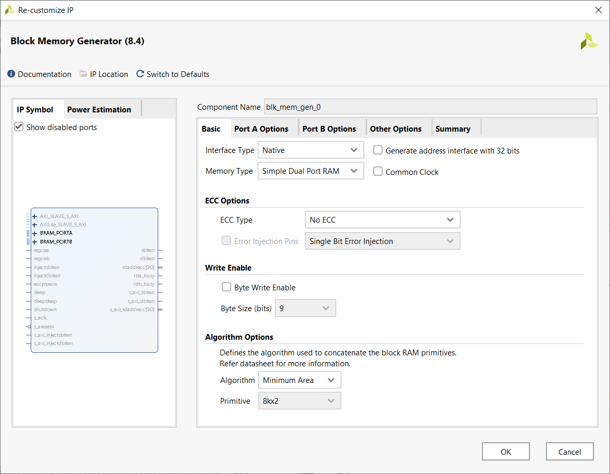
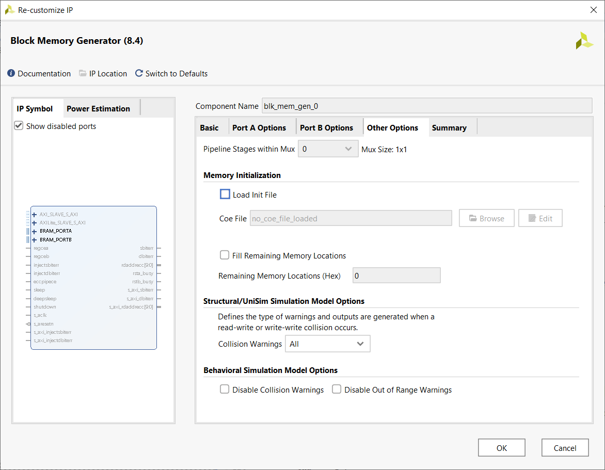
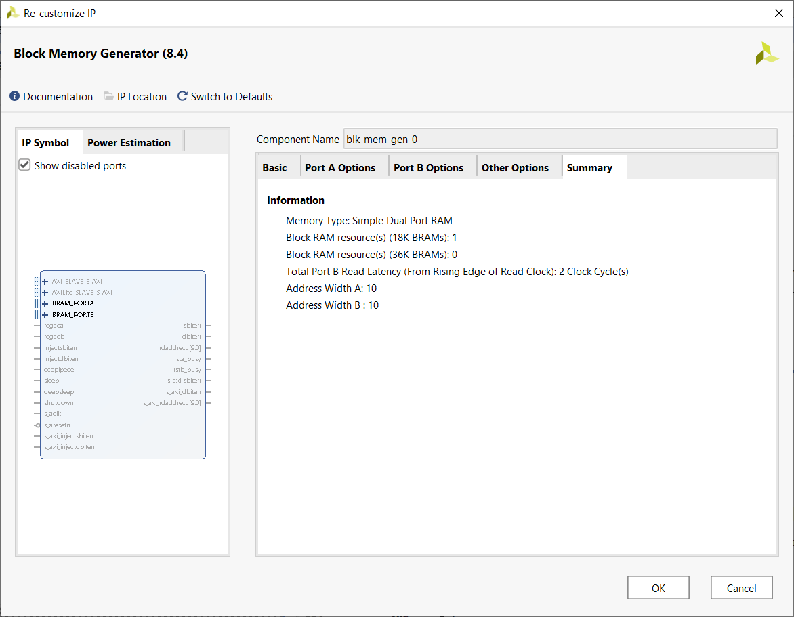
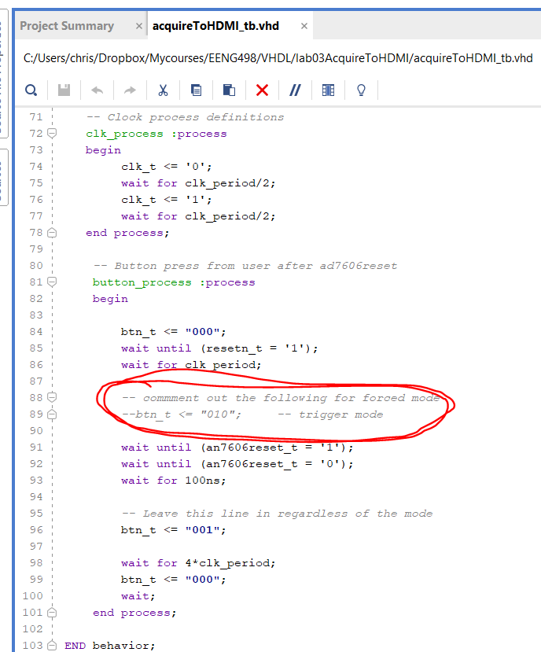
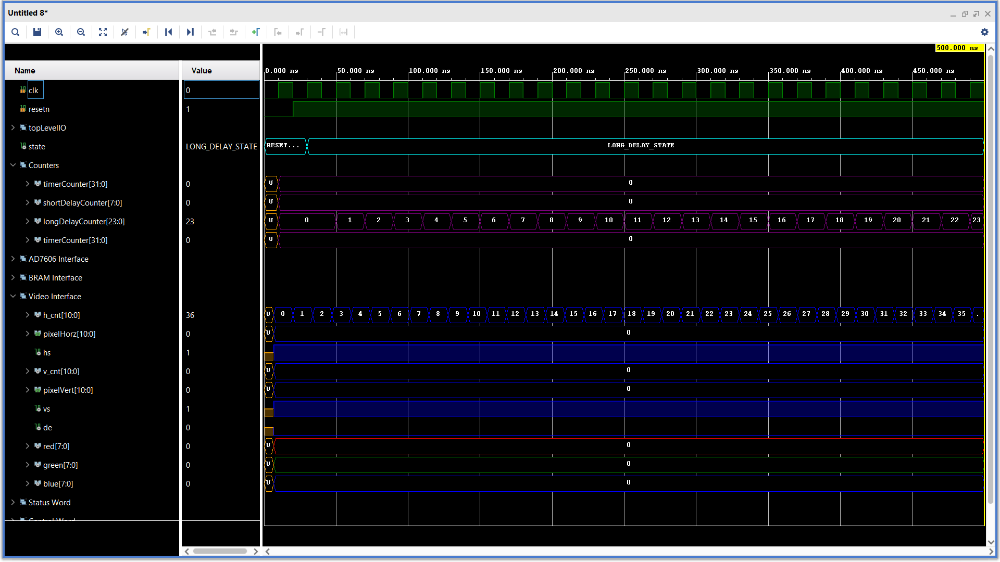
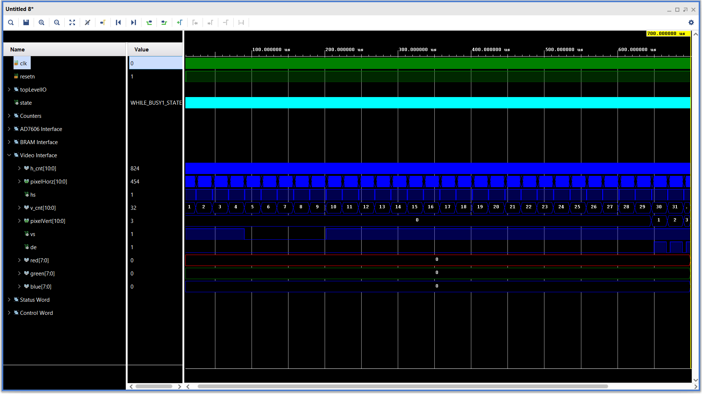
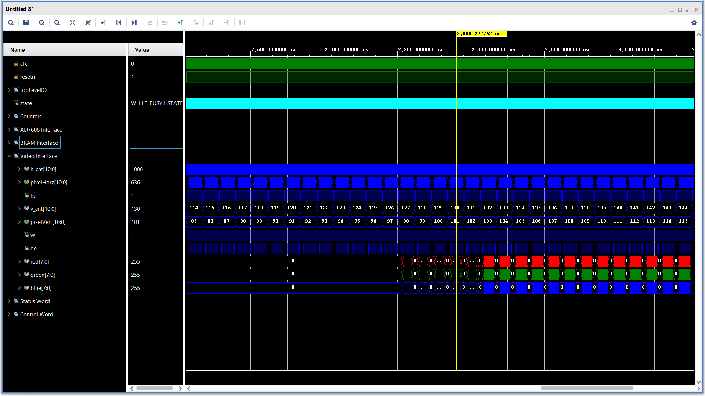
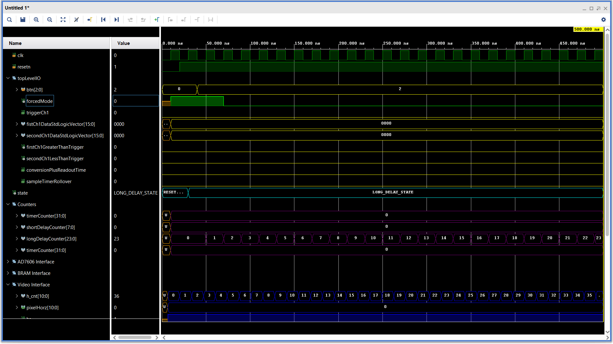
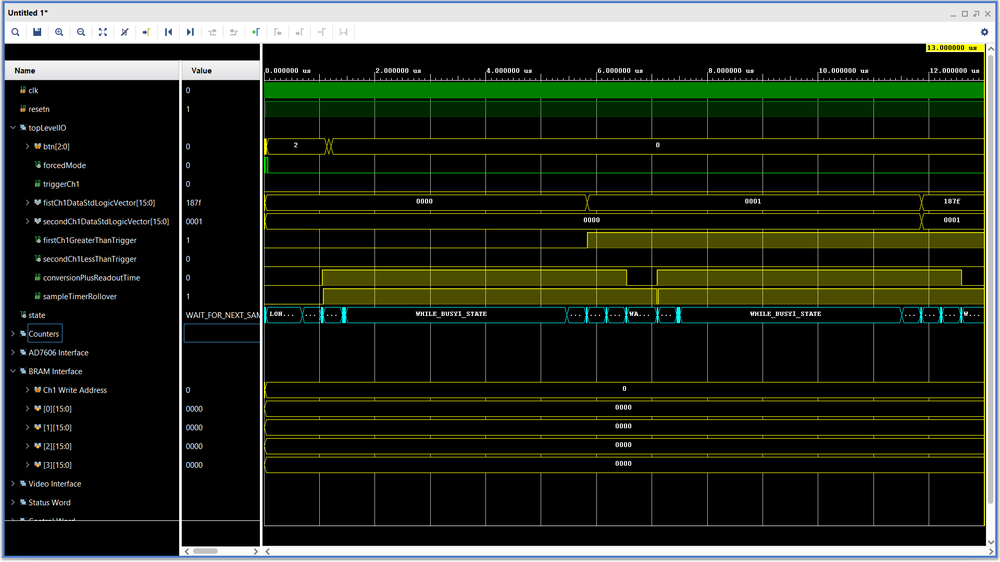

| Lab: | 3 |
Oscilloscope Datapath and Control
You are going to create a simple but stand-along oscilloscope in this lab. You will use the AD7606 to acquire the data and the HDMI port to display the data. It will be a challenge but something to be proud of when complete.Your oscilloscope will operate in two modes, FORCED and TRIGGERED.
- In FORCED mode the oscilloscope will wait for the user to signal that they want the scope to collect data by pressing a button. The oscilloscope will then fill its BRAMs with sampled data from the AD7606.
- In TRIGGER mode, the oscilloscope will wait for the input waveform on channel 1 to increase through 0V. When this happens, the oscilloscope will start filling its BRAMS with sampled data from the AD7606. After fillings the BRAMs, the oscilloscope will then go back to look for another trigger.

Architecture
The signalAcquire Top Level consists of two modules, a datapath and a control. The user will control the signalAcquire module using two buttons as follows:- Pressing PL KEY3 should toggle the oscilloscope between FORCED and TRIGGER mode.
- Pressing PL KEY4 when the oscilloscope is in FORCED mode will cause the oscilloscope to trigger and fill its channel 1 and 2 BRAMs.
| LED | signalAcquire PORT name |
| PL LED1 | triggerCh1 |
| PL LED2 | triggerCh2 |
| PL LED3 | conversionPlusReadoutTime |
| PL LED4 | sampleTimerRollover |
Control Unit
The control unit is an variation of the one that you created in the previous lab. You will only be reading 2 of the 8 channels, but will need to do this enough times to fill up your BRAM. Remember that your BRAM must have the same number of locations as your display has pixels across the active region of the display. The control unit has two main code sections, one to compute the next state and one to compute the output.You will use the state diagram to compute the next state of the control unit. I've put together the following PDF of the control unit to help you document your design and ensure your code is correct. The control word will start to get really long. I put together the following excel file to help me organize the bits and generate the VHDL code for the output process. In order to acquire samples from the AD7606 and fill up the BRAM, the control unit cycles around a loop starting at BEGIN_CONVERSION and ending in WAIT_FOR_END_OF_SAMPLE_INTERVAL. Clearly the time required to convert and read the AD7606 data must be shorter than the sampling interval. In order to check this you will add two special signals to the control word, conversionPlusReadoutTime and sampleTimerRollover.
These two signals will provide you with the AD7606 conversions duration (conversionPlusReadoutTime) and the sample interval duration (sampleTimerRollover). You will do this by sending these two signal out of the signalAcquire module to LEDs and then probing these LEDs with an oscilloscope. You will then look at the oscilloscope display and measure these intervals. In order to get accurate measurements, you should hold the conversionPlusReadoutTime high in BEGIN_CONVERSION through READ_CH2_HIGH and then drop the signal low in WAIT_FOR_END_OF_SAMPLE_INTERVAL. To get the most accurate value for sampleTimerRollover, keep it low in every state except BEGIN_CONVERSION.
Datapath
The datapath contains all the modules that you developed in labs 1 and 2. In addition, you will need:- A pair of BRAMs to store the AD7606 samples from channels 1 and 2.
- Logic to read the BRAM values and compare it against the current pixel position.
- Registers and comparators to look for a trigger on channels 1 and 2.
- Sampling rate counters to set the sampling rate period to one of four
preset rates.
- LOWEST_RATE = 2400 counts
- LOW_RATE = 1200 counts
- HIGH_RATE = 600 counts
- HIGHEST_RATE = 300 counts
- A SR flip flop to indicate if the oscilloscope is in looking storing samples (only when the oscilloscope is in TRIGGER mode).
BRAM
Start your instantiation of the BRAMs by clicking on the IP Catalog link in the project manager sub-window. Enter BRAM in the search text box. Double click on the Block Memory Generator selection. Then use the configuration given in the following images to create the BRAM. Note, PORTA depth needs to be large enough to accommodate the width of the active region of your display. My display was 1000 pixels wide, so I gave the BRAMs 1024 storage locations. Yup that was 24 more than needed for no good reason. This gave me a 10-bit address for the BRAM. Some of your oscilloscopes have more than 1024 pixels in the active display region, so will have 11-bit addresses for the BRAM. Plen accordingly.| TAB | Configuration |
| BASIC |  |
| PORT A OPTIONS |  |
| PORT B OPTIONS |  |
| OTHER OPTIONS |  |
| SUMMARY |  |
VHDL Code
- basicBuildingBlocks_package.vhd
You will provide this package based on your previous lab work. - an7606.vhd
This is an improved version of the an7606 module. It generates a 0V-centered sine wave on channel 1. This sine wave has an amplitude of ±2.5V and a period of 16 clock cycles. Channel 2 generates a square wave with an amplitude of ±2.5V and a period of 4 clock cycles. - acquireToHDMI_package.vhd
You will need to put all the constants associated with your control and status words in this package. You should also put the component descriptions of your the top-level acquireToHDMI module along with the datapath and control units. - acquireToHDMI_tb.vhd
This is the top-level simulation file. There is nothing in here to edit. You should make your component declarations to match the naming in this file. This will ensure that your naming works with the xdc file (the pin assignment file). - acquireToHDMI_tbWaveSetup.tcl This is the waveform setup file that you will use in your simulation. The instructions on how to use this file are contained in the comments. I would HIGHLY suggest that you edit these instructions to make them consistent with your development environment. This will save you time everytime you need to rerun a simulation.
- acquireToHDMI_fsm.vhdl
This is the control unit. You should look at the example code posted in the lecture notes for pointers on the logic and code syntax. - acquireToHDMI_datapath.vhdl
This is the datapath. You will need to instantiate basic building blocks and route the status and control word signals correctly. You should use lots of constants in your acquireToHDMI package to make your VHDL code more intuitive and thus easier to debug. Remember to comment in/out the rgb2dvi_0 and clk_wiz_0 modules when simulating and synthesizing your design. - acquireToHDMI.vhd
This is the top-level synthesis module. Use the acquireToHDMI package to store the component declarations for the datapath and control. - acquireToHDMI.xdc
This is the important part of the pin assignment file. You will be able to complete the rest of this file using the xdc files from the previous labs. - hdmi_package.vhd
I took at the constants out of my scopeFace file and placed them in their own package. This makes it easier to share the constants associated with the oscilloscope display. Not a big deal, but I found it helped share constants between different files.
Simulation
The datapath contains two modules, the rgb2dvi_0 and clk_wiz_0 that cannot be simulated. In order to run a simulation you will need to comment both out. You will replace the functionality of the clk_wiz_0 module with a pair of simulation-only process to generate videoClk and videoClk5x. You will not replace the rgb2dvi_0 module and consequently the HDMI output will be invalid.In order to verify that the forced and triggered modes of your oscilloscope work you will perform two separate simulations; one in forced mode and one in trigger mode. To do this you will need to modify that testbench by including or commenting out the following line of code in the acquireToHDMI_tb.vhd file:

Now that you have your files setup to run the simulation properly, you will want to setup your waveforms. In order to accommodate the more than 60 signals, you will use signal groups. A signal group is a related set of signals under a collapsible header that is opened/closed when you click on the ">" icon next to the group name.
| Mode | Time | Configuration |
| Forced | 600ns |  |
| Forced | 1500ns |  |
| Forced | 7us |  |
| Forced | 13us |  |
| Forced | 700us |  |
| Forced | 6041us |  |
| Forced | 2.88ms |  |
| Trigger | 500ns |  |
| Trigger | 1000ns |  |
| Trigger | 13us |  |
| Trigger | 120us |  |
| Trigger | 6143us |  |
Synthesis
You will need to complete the XDC file provided the the codes section. You should be able to get most of the pin assignments from your previous labs. Consult the AX7010 technical documents for any other pin assignments you might need.Before attempting synthesis, you will need to make the following changes to your code:
- Edit the datapath to:
- Include rgb2dvi_0 and clk_wiz_0
- Comment our the videoClk and videoClk5x processes
- Edit signalAcquire_package to use the correct LONG_DELAY_50Mhz_COUNTS value

I used Husker Scope to generate the waveforms shown in the photograph shown at the top of this lab. I would suggest using this software to generate your waveforms on the audio output of your computer or phone and then send these waveforms into your oscilloscope to be displayed on your HDMI display.